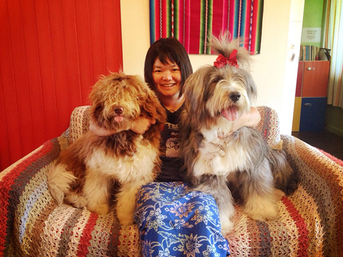

아일랜드 게스트 하우스에 오신것을 환영합니다! 제주의 게스트 하우스 센세이션이 시작된 바로 그곳, 아일랜드 게스트 하우스는 올레길 10코스와 11코스가 만나는 경치좋은 서귀포에 자리잡고 있습니다. 진짜 제주가 살아있는 저희 집으로 놀러오세요!
Welcome to Island Guesthouse! We are the first and best guesthouse of Jeju Island, located in southern Seokwipo, where you can easily reach Olle Walking Course 10 and 11. You can feel the real Jeju’s countryside while staying with us.
아일랜드 게스트 하우스의 안주인, 한국인보다 더 한국인 같은 여인, 아이링 입니다!
아일랜드 게스트하우스의 주인장 아이링은 말레시아의 보루네오 섬 코타키나발루 출신이에요.
그녀는 지구의 반이 넘는 곳을 여행다녔지만 제주도에 살기로 결심했습니다. 제주도의 바람과 돌, 사람들을 만나자마자 사랑에 빠져버렸거든요.
2009년부터 아이링은 전세계의 동료 여행자들을 위한 게스트하우스를 운영하고 있습니다. 그리고 그녀가 택한 집이 얼마나 아름다운 곳인지 보여줬지요.
그녀의 탁월한 인테리어 감각과 쾌활한 성격, 그리고 그녀의 전염성 강한 방랑벽 덕분에 아일랜드 게스트하우스는 곧바로 게스트하우스 계의 이정표 같은 존재가 되었습니다.
Island Guesthouse’s owner Ailing hailed from Borneo island of Malaysia. She traveled more than half of the globe, but she choose to live in Jeju Island. In 2009, she opened up the Island Guesthouse to accommodate fellow travelers from all around the world and showed them the beauty of her adopted home. With her excellent taste of interior design, cheerful personality, and her contagious wanderlust, Island Guesthouse immedetily became the guidepost of the guesthouse industry in Jeju Island.

아일랜드 게스트하우스의 마스코트, 탐라와 달링을 소개합니다!
My name is Tamna, I was born on 11th of Aug, 2009. Ailing brought me to Jeju by plane and I love living here! Although I have my little garden to play around but sometime I get bored.
If you are a dog lover, come and play with me. I will be here and waiting for you.
Hope to see you soon!!
Tamna